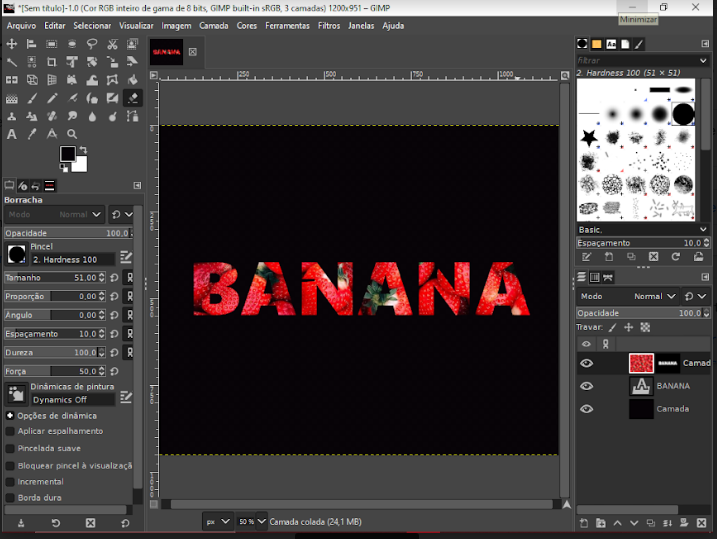

Mesclagem
1. Abra as duas imagens no GIMP, com a base sendo a imagem principal.
2. Copie a segunda imagem (Ctrl + C) e cole-a na imagem base (Ctrl + V) como uma camada flutuante.
3. Ancore a camada flutuante clicando com o botão direito sobre ela e escolhendo "Ancorar Camada".
4. Ajuste a opacidade e o modo de mesclagem da camada superior para controlar a fusão entre as imagens.
5. Se necessário, adicione uma máscara de camada e pinte para esconder ou revelar partes da imagem, depois exporte o resultado.
